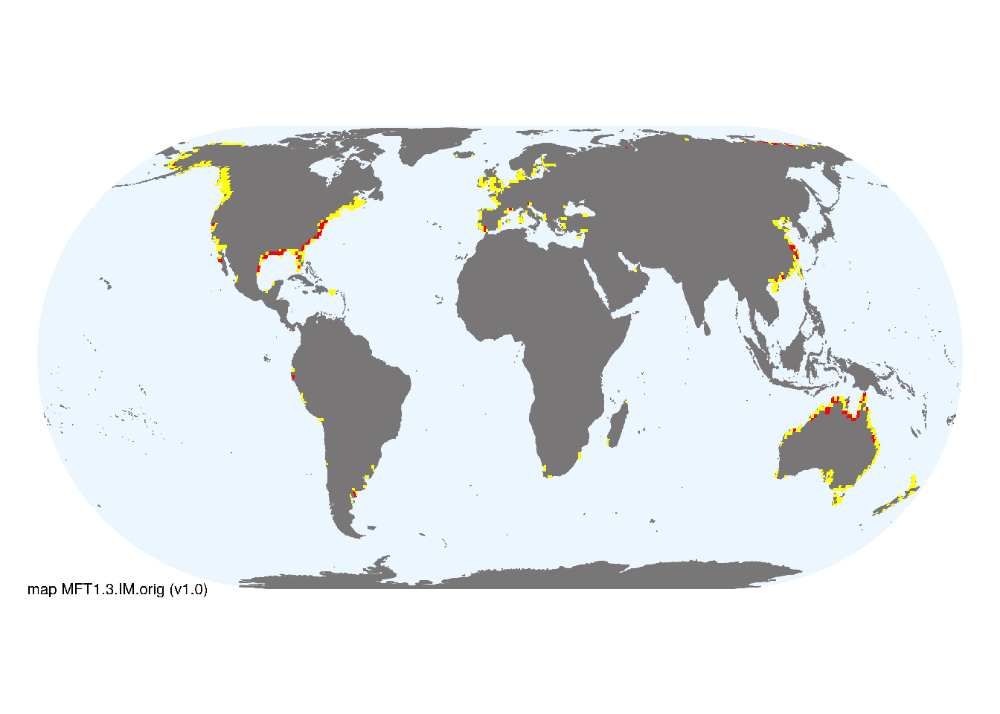

MFT1.3 Coastal saltmarshes and reedbeds
MFT1. Brackish tidal biome
MFT1
Profile summary
Full profile at https://global-ecosystems.org/explore/groups/MFT1.3
Brief description
Coastal salt marshes and reedbeds are mosaics of salt-tolerant grasses and low, typically succulent shrubs. structured by strong gradients of salinity and tidal influence. Salts may approach hypersaline levels near the limit of high spring tides, especially in the tropics. As well as larger plants, algal mats and phytoplankton contribute to productivity, while freshwater run-off and tides bring organic material and nutrients. Bacteria and fungi decompose biomass in oxygen-poor subsoils, and support a range of crustaceans, worms, snails and small fish. Shorebirds breed and forage in saltmarshes, with migratory species dispersing plants and animals.
Key features
Variable salinity tidal system dominated by salt-tolerant plants, with invertebrates, small/juvenile fish and birds..
Overview of distribution
Mostly low energy coasts from tropical to arctic and subantarctic latitudes.
Map description
The indicative map for for coastal saltmarshes and reedbeds (MFT1.3) was developed by resampling known distribution records summarised by McOwen et al. (2017). We used a buffer of 1km around the distribution data and a 30 arc second grid, thus large aggregations (> 1km2) are depicted as major occurrences, and the buffer areas with small occurrences are shown as minor occurrences. The original data is available at UNEP-WCMC..
Map code and version: MFT1.3.web.orig v2.0. 
Version history
Profile versions
- v2.1 (2022-04-06): DA Keith; AH Altieri; J Loidi; MJ Bishop.1
- v2.01 (NA): NA.
- v2.0 (2020-05-29): DA Keith; AH Altieri; J Loidi; MJ Bishop.
- v1.0 (2020-01-20): DA Keith; MJ Bishop.
Available maps
Read more details about the current map versions here.
- Web navigation (code: MFT1.3.web.orig, version v2.0)
- Indicative Map (code: MFT1.3.IM.orig, version v1.0)
Read more details about older or alternative versions of maps for this functional group.
- Indicative Map: requires review (code: MFT1.3.IM.orig, version v2.1)
- Indicative Map: replaced (code: MFT1.3.IM.orig, version v2.0)
- Web navigation: discarded (code: MFT1.3.web.orig, version v1.0)
- Web navigation: in preparation (code: MFT1.3.WM.nwx, version v1.0)
References
Main references
References used in the different versions of the profiles.
- Adam P (1990) Saltmarsh ecology Cambridge University Press, Cambridge DOI:10.1017/CBO9780511565328
- Bertness MD, Shumway SW (1993) Competition and facilitation in marsh plants American Naturalist 142, 718-724 DOI:10.1086/285567
- Jefferies RL, Jano AP and Abraham KF (2006) A biotic agent promotes large-scale catastrophic change in the coastal marshes of Hudson Bay Journal of Ecology 94, 234–242 DOI:10.1111/j.1365-2745.2005.01086.x
Map references
References used in the different versions of the maps (current and discarded).
- Thomas Gumbricht Rosa Maria Roman‐Cuesta Louis Verchot Martin Herold Florian Wittmann Ethan Householder Nadine Herold Daniel Murdiyarso (2017) An expert system model for mapping tropical wetlands and peatlands reveals South America as the largest contributor Glob Change Biol. 23: 3581– 3599 DOI:10.1111/gcb.13689
- McOwen CJ, Weatherdon LV, van Bochove JW, Sullivan E, Blyth S, Zockler C, Stanwell-Smith D, Kingston N, Martin CS, Spalding M, Fletcher S (2017) A global map of saltmarshes Biodiversity Data Journal 5: e11764 DOI:10.3897/BDJ.5.e11764
- Spalding MD, Fox HE, Allen GR, Davidson N, Ferdaña ZA, Finlayson M, Halpern BS, Jorge MA, Lombana A, Lourie SA, Martin KD, McManus E, Molnar J, Recchia CA, Robertson J (2007) Marine ecoregions of the world: a bioregionalization of coastal and shelf areas. Bioscience 57: 573–583. DOI:10.1641/B570707
Footnotes
This is the current version available at official site.↩︎